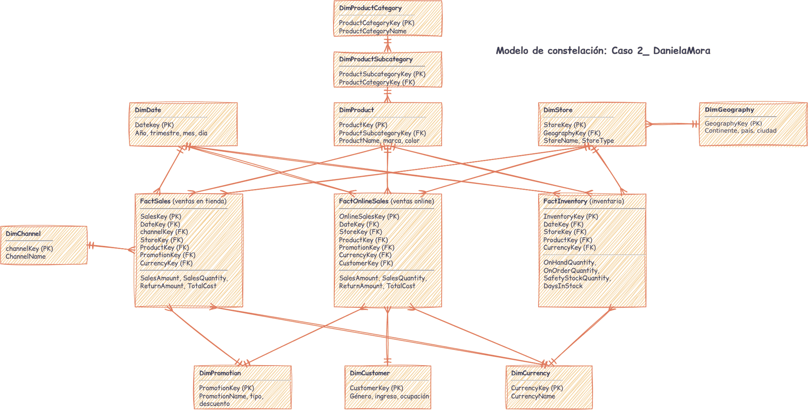
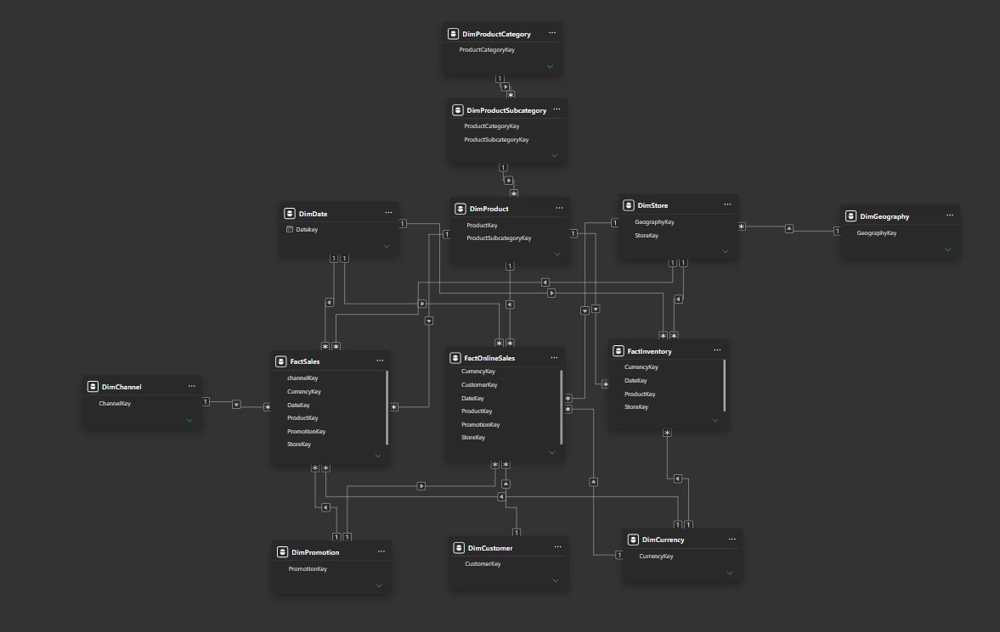
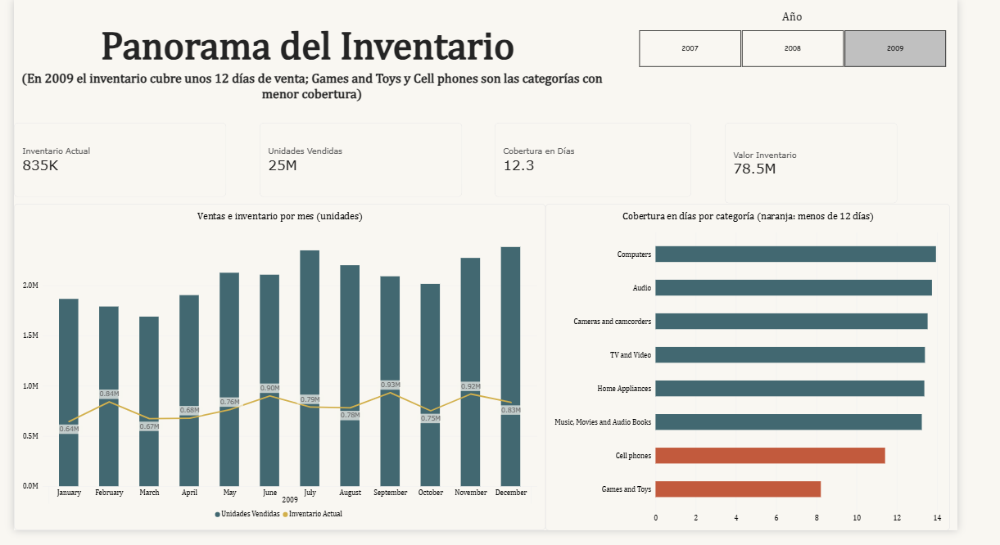
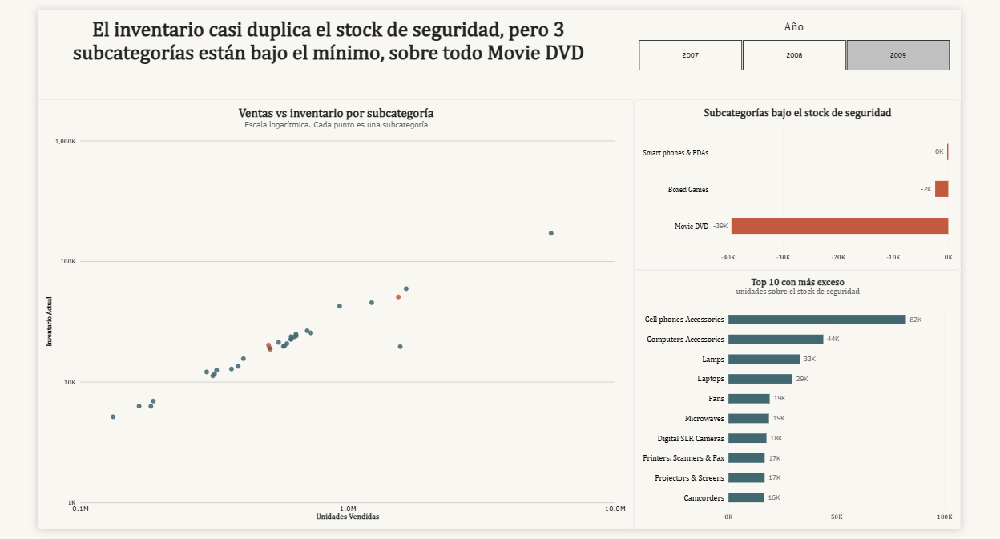
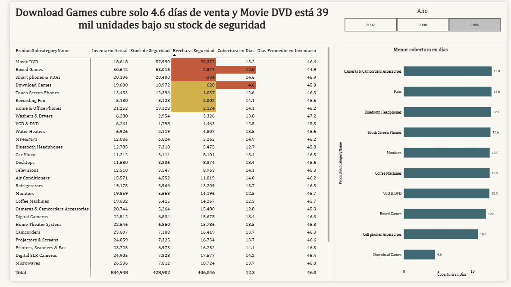

1. Definición del problema
Contexto
Este caso propone aplicar el modelo de constelación de hechos a una base de datos real para construir un dashboard en Power BI mediante un relato visual. Se empleó ContosoRetailDW, una base de datos de ejemplo en SQL Server. Estos datos simulan el almacén de una cadena de tiendas, con detalles sobre ventas en tienda, ventas en línea e inventario, entre otros.
Pregunta de investigación
¿Dónde existe una discrepancia entre el inventario disponible y las ventas reales?
Para responderla, se combinaron inventario y ventas mediante elementos compartidos como el producto, la tienda y la fecha, lo que genera una constelación. El análisis se enfoca en 2009, aunque el tablero permite revisar los dos años previos.
2. Obtención de datos
Los datos provienen de ContosoRetailDW, una base de datos de ejemplo en SQL Server. Al revisarla en SQL, se identificaron 25 tablas: 8 tablas de hechos y 17 de dimensiones.
| Tabla de hechos | Filas | ¿Seleccionada? |
|---|---|---|
| FactOnlineSales | 12.6 millones | Sí: ventas en línea |
| FactInventory | 8 millones | Sí: inventario |
| FactSalesQuota | 7.5 millones | No |
| FactSales | 3.4 millones | Sí: ventas en tienda |
| FactStrategyPlan | 2.8 millones | No |
Se seleccionaron FactSales, FactOnlineSales y FactInventory porque describen la misma operación comercial y comparten las dimensiones de fecha, producto, tienda y moneda. Además, permiten cruzar inventario con ventas, que es justamente lo que se pretende demostrar con el dashboard. Las tablas de tecnología y tipos de cambio no comparten estas dimensiones, mientras que FactSalesQuota y FactStrategyPlan se dejaron fuera porque no se tomaron en cuenta para este análisis.
Consultas SQL utilizadas en la exploración
Tablas y número de filas
SELECT t.name AS tabla, SUM(p.rows) AS filas
FROM sys.tables t
JOIN sys.partitions p ON p.object_id = t.object_id AND p.index_id IN (0,1)
GROUP BY t.name
ORDER BY t.name;Llaves foráneas de las tablas de hechos
SELECT OBJECT_NAME(fk.parent_object_id) AS tabla_hecho,
COL_NAME(fkc.parent_object_id, fkc.parent_column_id) AS columna,
OBJECT_NAME(fk.referenced_object_id) AS dimension
FROM sys.foreign_keys fk
JOIN sys.foreign_key_columns fkc ON fk.object_id = fkc.constraint_object_id
WHERE OBJECT_NAME(fk.parent_object_id) LIKE 'Fact%'
ORDER BY tabla_hecho;Rango de fechas por tabla de hechos
SELECT 'FactSales' AS tabla, MIN(DateKey) AS desde, MAX(DateKey) AS hasta FROM FactSales
UNION ALL
SELECT 'FactOnlineSales', MIN(DateKey), MAX(DateKey) FROM FactOnlineSales
UNION ALL
SELECT 'FactInventory', MIN(DateKey), MAX(DateKey) FROM FactInventory;Relaciones entre dimensiones
SELECT OBJECT_NAME(fk.parent_object_id) AS tabla,
COL_NAME(fkc.parent_object_id, fkc.parent_column_id) AS columna,
OBJECT_NAME(fk.referenced_object_id) AS referencia
FROM sys.foreign_keys fk
JOIN sys.foreign_key_columns fkc ON fk.object_id = fkc.constraint_object_id
WHERE OBJECT_NAME(fk.parent_object_id) LIKE 'Dim%'
ORDER BY tabla;3. Diagnóstico y preparación de los datos
Durante la exploración se encontraron estos detalles:
| Hallazgo | Detalle y decisión |
|---|---|
| Años sin datos | La tabla de fechas incluye años de 2005 a 2011, pero los hechos solo tienen datos entre 2007 y 2009, por lo que se aplicó un filtro en el informe para mostrar únicamente esos años. |
| Volumen | Las tres tablas seleccionadas suman cerca de 24 millones de filas. |
| Periodo | Las ventas abarcan desde el 1 de enero de 2007 hasta el 31 de diciembre de 2009, mientras que el inventario se registra desde el 6 de enero de 2007 hasta el 26 de diciembre de 2009, debido a que se llevan registros periódicos de las existencias. |
4. Modelado de datos
Se aplicó un modelo de constelación de hechos: varios esquemas en forma de estrella conectados por las dimensiones que tienen en común. En el centro se encuentran las tres tablas de hechos (FactSales, FactOnlineSales y FactInventory), que comparten las dimensiones de fecha, producto, tienda y moneda. El modelo presenta 19 relaciones activas, todas de uno a muchos con filtro en una sola dirección, desde la dimensión hacia el hecho.

Modelo de constelación de ContosoRetailDW. Elaboración propia en draw.io.

Modelo de constelación de ContosoRetailDW. Elaboración propia en Power BI.
Medidas DAX principales
- Unidades Vendidas: combinan las cantidades de ventas en tienda y en línea.
- Inventario Actual y Stock de Seguridad: toman la última captura del periodo, sin sumar todas las capturas.
- Cobertura en Días: indica cuántos días de venta cubre el inventario.
- Brecha vs Seguridad: muestra cuántas unidades superan o no el mínimo.
5. Visualización de datos
El dashboard se diseñó en 3 páginas que responden a la misma pregunta: ¿dónde hay un desajuste entre lo que hay en inventario y lo que se vende? Cada página tiene un título que resume su hallazgo.
- 835 K Unidades en inventario
- 25 M Unidades vendidas
- 12.3 Días de cobertura
- 78.5 M Valor del inventario
- 3 Subcategorías bajo el mínimo
Página 1 · Panorama del inventario

En 2009, la empresa contaba con 835 mil unidades en inventario, valoradas en 78.5 millones, mientras que vendió 25 millones de unidades durante el año. Esto resultó en una cobertura de inventario de 12.3 días, lo que significa que el inventario era suficiente para poco menos de dos semanas con el ritmo de venta anual. A lo largo del año, las ventas mensuales aumentaron de 1.69 millones de unidades en marzo a 2.38 millones en diciembre, y el inventario siguió una tendencia similar, oscilando entre 0.64 y 0.93 millones de unidades. Sin embargo, al analizar por categoría, la mayoría tenía una cobertura de entre 13 y 14 días, pero las categorías de Cell phones (aproximadamente 11 días) y Games and Toys (aproximadamente 8 días) quedaron por debajo del umbral de 12 días y se destacan en naranja.
Página 2 · El desajuste

El inventario total (834,948 unidades) es casi el doble del stock de seguridad (428,902 unidades), con una diferencia de 406,046 unidades. En general, hay inventario suficiente. No obstante, tres subcategorías están por debajo de su nivel mínimo: Movie DVD (−39,372 unidades), Boxed Games (−2,374) y Smart phones & PDAs (−204, casi en el límite).
El gráfico de dispersión usa una escala logarítmica debido a la gran variación en las cantidades de las subcategorías. Los puntos muestran una relación casi lineal, lo que indica que el inventario se distribuye proporcionalmente a las ventas. Las subcategorías con mayor exceso de inventario son Cell phones Accessories (82 mil), Computers Accessories (44 mil), Lamps (33 mil) y Laptops (29 mil). Un punto solitario bajo los demás representa una subcategoría con altas ventas y poco inventario: Download Games.
Página 3 · Detalle por subcategoría

La matriz organiza las subcategorías según su diferencia con el stock de seguridad, destacando en color los casos más urgentes. El hallazgo más significativo es Download Games, con apenas 4.6 días de cobertura, muy por debajo del resto, que oscila entre 10 y 17 días. Su inventario (19 mil unidades) supera el mínimo por solo 628 unidades, pero su rotación es muy rápida.
Movie DVD presenta una situación particular: su inventario está 39 mil unidades por debajo de su stock de seguridad (18 mil unidades disponibles contra 57 mil de seguridad), pero su cobertura es normal (13.2 días). Esto indica que el problema no radica en una demanda excesiva, sino en un stock de seguridad demasiado alto en relación con las ventas reales. En contraste, Cell phones Accessories tiene el mayor exceso de unidades, pero una cobertura baja (10.8 días), ya que sus ventas son tan altas que incluso un inventario considerable se agota rápidamente. Esto demuestra que un exceso de unidades no siempre se traduce en un exceso de días de venta.
Decisiones de diseño
Cada gráfico se seleccionó de acuerdo con la pregunta: columnas y línea para mostrar la evolución mensual, barras horizontales para comparar categorías, dispersión para relacionar dos medidas y matriz para dar detalle. Se optó por una paleta de colores reservando el naranja para las alertas, de manera que el color llame la atención sobre los casos críticos. El umbral de 12 días se eligió como referencia cercana a la cobertura promedio de 2009 (12.3 días).
Supuestos y limitaciones
Se consideró que las ventas en tienda y en línea provienen del mismo inventario, por lo que las unidades vendidas combinan ambos canales. Los días con actividad se determinaron con base en las ventas en tienda, mientras que el inventario se registró como la última captura del periodo. Asimismo, el estudio se enfocó en 2009 y no examinó el comportamiento por tienda ni por canal, aunque el modelo lo permite.
6. Documentación
Archivos del proyecto
El informe, el archivo de Power BI y las consultas SQL están en el repositorio del proyecto.